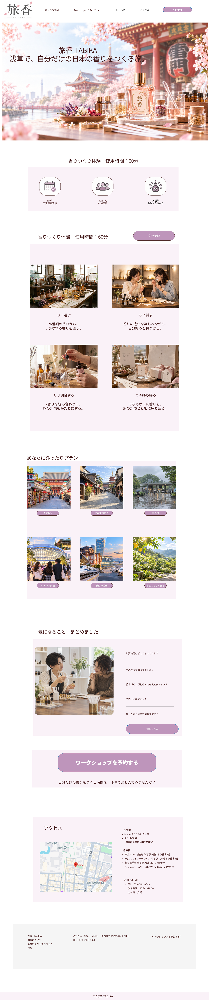

ワイヤーフレーム
ワイヤーフレーム作成方法
Figmaを使用し、PC版とスマートフォン版の画面構成を作成する。
浅草観光、一人時間、イベント前後、雨の日などの状況から、inimuの香りづくり体験を発見し、予約まで迷わず進める構成にする。
状況から探す → 体験を知る → 不安を解消する → 予約するという流れを基本とする。
- ページの目的とCTAが明確であること
- 所要時間・料金・アクセスを確認しやすいこと
- PCとスマートフォンの両方で操作しやすいこと
- 見出し・本文・カードが用紙幅からはみ出さないこと
トップページ

Figmaで作成したトップページPC版のワイヤーフレーム。縦長の画面全体を用紙幅に合わせて表示する。
| セクション | 配置する要素 | 配置意図・ユーザーへの効果 |
|---|---|---|
| ヘッダー | ロゴ、主要ナビ、予約CTA | どのページからでも体験内容と予約へ移動できる。 |
| ヒーロー | コンセプト、浅草の写真、CTA | 「浅草で香りをつくる体験」であることを最初に伝える。 |
| 利用シーン | 浅草観光、すき間時間、雨の日などのカード | 香水を探していない人も、自分の状況から体験を発見できる。 |
| 体験紹介・流れ | 26種の香り、選ぶ・試す・完成の流れ | 初参加でも体験内容を想像でき、不安を減らせる。 |
| モデルコース・アクセス | 浅草観光との組み合わせ、店舗情報 | 自分の予定に組み込めるか判断しやすい。 |
| 最終CTA・フッター | 予約CTA、各ページへのリンク | 理解が深まったタイミングで予約へつなげる。 |
当初は、Figmaで設計したトップページをもとに、外部予約サービスと連携してワークショップ予約へつなげる計画だった。
しかし制作途中で外部サービスとの連携が禁止されたため、予約導線を見直し、Java・Spring Boot・MySQLを活用したデモ予約システムを組み込む方針へ変更した。
その結果、予約までの画面遷移やページ構成、予約ボタンの配置に、初期Figmaと最終実装との一部相違が生じている。Figmaの画像は初期設計資料として保存し、最終実装とは別の資料として扱う。
下層ページ
画像は未作成。体験内容、26種の香り、体験の流れ、料金、所要時間、完成品、参加方法、予約CTAを配置する。
予約前に必要な情報を一つのページで確認できる構成にする。
画像は未作成。浅草観光、街歩き、雨の日、イベント前後、移動前後、自然の香りが好き、の6入口をカードで表示する。
モデルコースと所要時間を示し、今日の予定への組み込みやすさを伝える。
画像は未作成。店舗所在地、Googleマップ、最寄駅、徒歩時間、周辺観光地・イベント会場からの移動情報を掲載する。
画像は未作成。料金、所要時間、初心者・一人参加、持ち物、当日の流れ、完成品、雨天時、予約方法を掲載する。
予約直前の疑問を解消し、離脱を防ぐ。
Webアプリケーション画面
画像は未作成。予約日、時間、人数、氏名、メールアドレス、電話番号、備考を入力する。
画像は未作成。入力内容を一覧表示し、「修正する」と「予約を確定する」を分けて配置する。
画像は未作成。完了メッセージ、予約内容、予約番号、トップページへのリンクを表示する。
画像は未作成。ログイン後、予約ID、日付、時間、氏名、人数、状況を一覧表示する。検索・並び替え・ページネーションにも対応する。
予約入力 → 内容確認 → 予約完了
管理者はログイン → 予約一覧 → 予約詳細の順に操作する。
スマートフォン版
トップページ、香りづくり体験、おすすめの過ごし方、予約入力、予約内容確認を対象とする。画像は未作成。
- 縦スクロールを基本にする
- ヘッダーはコンパクトなハンバーガーメニューにする
- カードは1列にし、本文を短くする
- CTAとフォーム入力欄はタップしやすい大きさにする
- 画像・見出し・説明の順で視線の流れを整える
- エラー表示は入力欄の近くに置く
利用シーンを探す → 体験内容を確認 → アクセス・FAQを確認 → 予約入力 → 内容確認 → 完了
観光中や移動中でも、片手で短時間に情報を確認して予約できる構成にする。